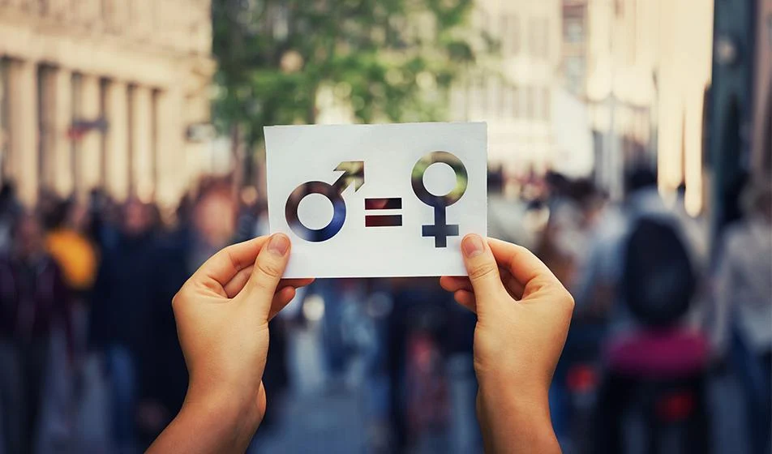
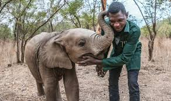
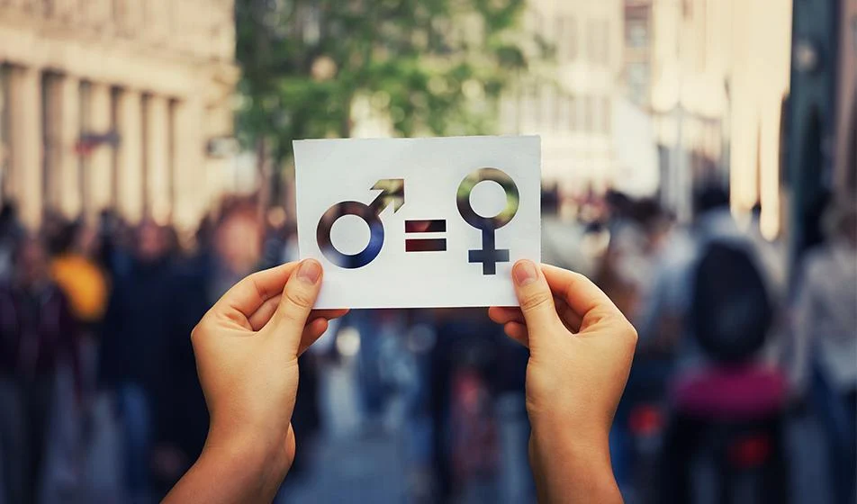
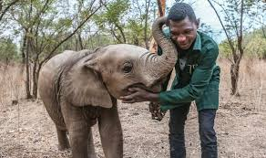

Setiap perjalanan besar selalu dimulai dengan langkah kecil. Begitu pula dengan upaya membangun masa depan yang lebih baik, yang lahir dari tekad bersama dan semangat kolaborasi. Di tengah perubahan zaman, harapan akan dunia yang adil, sejahtera, dan berkelanjutan menjadi tujuan yang terus digenggam oleh banyak bangsa. Salah satu wujud nyata dari tekad tersebut adalah hadirnya Sustainable Development Goals (SDGs), agenda global yang mengajak seluruh negara untuk bekerja sama—baik secara bilateral, regional, maupun multilateral—demi tercapainya pembangunan berkelanjutan. Dari 17 tujuan yang ditetapkan, SDG ke-4 menekankan pentingnya pendidikan berkualitas bagi semua orang. Pendidikan yang inklusif dan merata menjadi fondasi utama untuk mencetak generasi yang cerdas, berdaya saing, dan siap menghadapi tantangan masa depan.
📖 Pengertian SDGs Sustainable Development Goals (SDGs) atau Tujuan Pembangunan Berkelanjutan** adalah rencana aksi global yang berlandaskan prinsip *universal, integrasi, dan inklusif*. SDGs bertujuan memastikan bahwa tidak ada seorang pun yang tertinggal (*No One Left Behind*). Agenda ini mencakup tiga dimensi utama pembangunan: sosial, ekonomi, dan lingkungan, serta berusaha memperkuat perdamaian universal dan kesejahteraan manusia. 🌍 Tujuan Utama SDGs SDGs hadir sebagai jawaban atas tantangan dunia seperti kemiskinan, ketimpangan sosial, perubahan iklim, dan degradasi lingkungan. Dengan kerangka kerja yang jelas, SDGs mendorong negara-negara untuk bekerja sama dalam mengatasi masalah kompleks melalui kebijakan, inovasi, dan kolaborasi lintas sektor.

Pendidikan adalah fondasi utama bagi pembangunan manusia dan masyarakat. SDG ke-4 menekankan pentingnya memastikan akses pendidikan yang inklusif, adil, dan berkualitas bagi semua orang. Tanpa pendidikan yang memadai, kesenjangan sosial akan semakin melebar, dan generasi muda kehilangan kesempatan untuk mengembangkan potensi diri. Dengan pendidikan, seseorang tidak hanya memperoleh pengetahuan, tetapi juga keterampilan, nilai, dan sikap yang diperlukan untuk berkontribusi dalam kehidupan sosial, ekonomi, dan politik. Selain itu, pendidikan berkualitas menjadi kunci untuk mencapai tujuan-tujuan SDGs lainnya. Misalnya, pendidikan dapat meningkatkan kesadaran tentang kesehatan (SDG 3), mendorong kesetaraan gender (SDG 5), serta memperkuat kemampuan masyarakat dalam menghadapi tantangan lingkungan (SDG 13). Melalui kerja sama bilateral, regional, dan multilateral, negara-negara dapat berbagi teknologi pembelajaran, memperbaiki sistem pendidikan, dan memperluas akses bagi kelompok rentan. Dengan demikian, SDG 4 bukan hanya tentang sekolah dan kurikulum, tetapi tentang membangun generasi yang siap menciptakan masa depan yang berkelanjutan.
🌍 Pengertian Kerja Sama Bilateral
Kerja sama bilateral merupakan salah satu bentuk kerja sama internasional yang paling umum. Kata *bilateral* sendiri berarti “dua pihak,” sehingga kerja sama ini hanya melibatkan dua negara yang saling berinteraksi. Tujuannya adalah untuk saling menguntungkan, baik dalam hal perdagangan, investasi, pendidikan, maupun keamanan. Karena sifatnya yang lebih fokus, kerja sama bilateral sering kali lebih mudah dijalankan dibanding kerja sama multilateral yang melibatkan banyak negara.
Kerja sama bilateral bertujuan memperkuat hubungan diplomatik, meningkatkan kesejahteraan masyarakat, serta memperluas akses terhadap sumber daya yang dibutuhkan. Manfaatnya antara lain: memperlancar perdagangan antarnegara, membuka peluang investasi, memperkuat stabilitas politik, serta mempererat hubungan budaya. Dengan adanya kerja sama ini, negara dapat saling melengkapi kebutuhan masing-masing, misalnya satu negara memiliki sumber daya alam melimpah sementara negara lain memiliki teknologi yang lebih maju.


📘 Contoh Kerja Sama Bilateral
Contoh nyata kerja sama bilateral adalah hubungan antara Indonesia dan Jepang dalam bidang ekonomi dan pendidikan. Jepang banyak berinvestasi di Indonesia melalui pembangunan infrastruktur dan industri otomotif, sementara Indonesia menyediakan sumber daya alam dan tenaga kerja. Selain itu, ada juga kerja sama antara Indonesia dan Australia dalam bidang pendidikan, di mana banyak mahasiswa Indonesia mendapat beasiswa untuk belajar di universitas Australia. Kesimpulannya Kerja sama bilateral menjadi salah satu pilar penting dalam hubungan internasional karena sifatnya yang lebih sederhana dan langsung. Dengan adanya kesepakatan yang jelas antara dua negara, kerja sama ini dapat memberikan manfaat nyata bagi kedua belah pihak. Dalam konteks globalisasi, kerja sama bilateral tidak hanya memperkuat hubungan diplomatik, tetapi juga menjadi sarana untuk meningkatkan kesejahteraan masyarakat dan memperkuat posisi negara di dunia internasional.
Kerja sama regional adalah bentuk hubungan antarnegara yang berada dalam satu kawasan atau wilayah tertentu. Fokusnya adalah memperkuat solidaritas dan kolaborasi di antara negara-negara yang memiliki kedekatan geografis, sejarah, budaya, atau kepentingan ekonomi. Karena berada dalam satu kawasan, kerja sama regional biasanya lebih mudah dijalankan karena adanya kesamaan tantangan dan tujuan bersama.
Tujuan utama kerja sama regional adalah meningkatkan stabilitas kawasan, memperkuat ekonomi, serta mempererat hubungan sosial dan budaya antarnegara. Manfaatnya antara lain: memperlancar perdagangan regional, memperkuat keamanan kawasan, memperluas kesempatan pendidikan, serta mempererat hubungan antar masyarakat. Dengan adanya kerja sama ini, negara-negara di kawasan dapat saling mendukung dan mengurangi ketergantungan pada pihak luar.


Contoh nyata kerja sama regional adalah ASEAN (Association of Southeast Asian Nations) yang beranggotakan negara-negara di Asia Tenggara, termasuk Indonesia. ASEAN dibentuk untuk memperkuat stabilitas politik, meningkatkan pertumbuhan ekonomi, serta mempererat hubungan sosial dan budaya di kawasan Asia Tenggara. Selain ASEAN, ada juga Uni Eropa (European Union) di kawasan Eropa yang menjadi contoh kerja sama regional dengan integrasi ekonomi dan politik yang lebih mendalam. Kerja sama regional menjadi salah satu pilar penting dalam hubungan internasional karena mampu memperkuat solidaritas antarnegara dalam satu kawasan. Dengan adanya kesamaan kepentingan dan tantangan, kerja sama ini dapat memberikan manfaat nyata bagi masyarakat di kawasan tersebut. Dalam era globalisasi, kerja sama regional juga berperan sebagai jembatan untuk memperkuat posisi kawasan di tingkat global.
Kerja sama multilateral adalah bentuk hubungan internasional yang melibatkan lebih dari dua negara dalam suatu forum atau organisasi. Berbeda dengan bilateral (dua negara) dan regional (satu kawasan), kerja sama multilateral bersifat global dan mencakup banyak pihak dengan kepentingan yang beragam. Tujuannya adalah menciptakan kesepakatan bersama untuk menghadapi isu-isu besar yang tidak bisa diselesaikan oleh satu atau dua negara saja.
Kerja sama multilateral bertujuan memperkuat solidaritas internasional, menciptakan perdamaian dunia, serta mengatasi tantangan global seperti perubahan iklim, perdagangan internasional, kesehatan, dan keamanan. Manfaatnya antara lain: memperluas jaringan diplomasi, meningkatkan akses terhadap sumber daya global, memperkuat posisi negara di dunia internasional, serta menciptakan standar dan aturan bersama yang berlaku lintas negara.


🌍 Kerja sama bilateral, regional, dan multilateral memiliki peran penting dalam mendukung pencapaian Sustainable Development Goals (SDGs). Dalam kerja sama bilateral, dua negara dapat saling mendukung melalui program yang lebih fokus dan langsung, misalnya negara maju membantu negara berkembang dengan teknologi pendidikan, beasiswa, atau pembangunan infrastruktur sekolah sehingga pencapaian SDG 4 tentang pendidikan berkualitas dapat lebih cepat dan efektif. Sementara itu, kerja sama regional melibatkan negara-negara dalam satu kawasan untuk menghadapi tantangan bersama, seperti ASEAN yang mengembangkan program pendidikan lintas negara, memperkuat sistem kesehatan, atau menciptakan kebijakan lingkungan bersama; kesamaan geografis dan budaya membuat strategi kolektif lebih relevan bagi masyarakat di kawasan tersebut. Di sisi lain, kerja sama multilateral melibatkan banyak negara di dunia melalui forum global seperti PBB, di mana tindakan nyata dapat berupa penyusunan kebijakan internasional, berbagi praktik terbaik, serta penggalangan dana global untuk mendukung pencapaian SDGs; forum multilateral juga menjadi wadah untuk menciptakan standar internasional yang berlaku lintas negara sehingga setiap negara dapat bergerak bersama menuju pembangunan berkelanjutan. Dengan sinergi ketiga bentuk kerja sama ini, pencapaian SDGs dapat dipercepat, lebih terarah, dan memberikan manfaat nyata bagi seluruh umat manusia.
Halo Semuanya !! Perkenalkan nama saya Cassandra dari kelas 92/7 seorang pendidik yang berfokus pada penyusunan materi edukasi yang ringkas, visual, dan mudah dipahami. Saya memiliki minat besar dalam menghubungkan konsep global seperti Sustainable Development Goals (SDGs) dengan konteks lokal agar lebih relevan bagi siswa dan masyarakat. Dengan latar belakang dalam mengorganisasi informasi kompleks menjadi format yang sederhana—seperti tabel, infografis, dan poin-poin praktis—saya berkomitmen untuk menghadirkan pembelajaran yang tidak hanya informatif, tetapi juga inspiratif dan dapat diterapkan dalam kehidupan sehari-hari.

Dalam perjalanan saya memahami pentingnya SDGs, khususnya tujuan pendidikan berkualitas, saya pernah terlibat dalam kegiatan yang mempertemukan berbagai pihak dari dalam dan luar negeri. Saat mengikuti sebuah program pertukaran pelajar, saya melihat bagaimana kerja sama bilateral dapat membuka kesempatan belajar lintas negara. Pengalaman itu membuat saya sadar bahwa akses pendidikan bukan hanya soal ruang kelas, tetapi juga tentang bagaimana negara saling mendukung untuk memperluas wawasan generasi muda. 🤝 Selain itu, saya juga pernah berpartisipasi dalam forum regional yang membahas isu pendidikan di Asia Tenggara. Di sana saya menyaksikan bagaimana kerja sama regional dan multilateral menjadi wadah untuk berbagi ide, strategi, dan solusi nyata. Diskusi tersebut memberi saya pengalaman berharga bahwa pencapaian SDGs tidak bisa dilakukan sendiri, melainkan melalui kolaborasi yang terstruktur antara pemerintah, masyarakat, dan komunitas internasional. Dari pengalaman itu, saya semakin yakin bahwa tindakan nyata, sekecil apa pun, dapat memberi kontribusi besar bagi masa depan yang berkelanjutan.